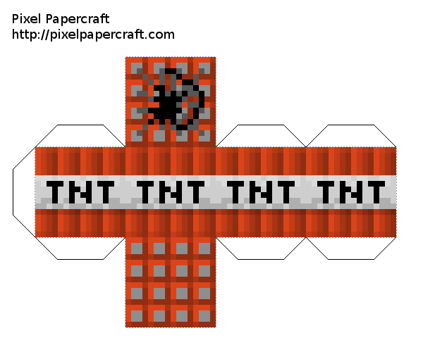

Navigate to this page on mobile phone (and "initialize" it by clicking the dumb button).
Place mobile phone inside TNT block, close the block.
Spawn some friends, everyone standing in a circle (how very un'craft)
funtime. Bump/tap the TNT block to "ignite". Don't be the one holding the TNT when it blows! Toss it to someone else!
ProTip®TM #1: Make sure the print out is big enough; perhaps upwards of 40cm along the longest 4-face part, assuming a longish, modern mobile phone that will sit in the box diagonally.
ProTip®TM #2: It helps to turn screen time out off or to a very long time for the duration of the game. If the screen goes dark and locks, the javascript will no longer receive sensor events.
ProTip®TM #3: Actually, probably better print out on paper, but also trace it out on some cardboard and glue or tape it on to that. Which in turn means some skills like scoring and creasing. A plain sheet of paper will probably not hold up very well.

Credit to super0noor for the TNT block cutout, found at PixelPapercraft.